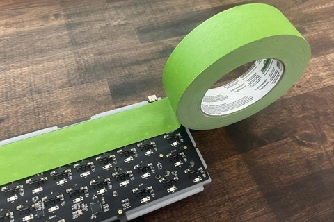

Blog
MOD PHÍM - PHẢI LÀM SAO PHẢI LÀM SAO?? - PHẦN 2
Tiếp tục câu chuyện của phần 1, ở phần 2 sẽ có vài ba mod thêm cho anh em về nâng cấp em phím của mình: Nghe chữ “Force brake” tưởng chừng là mod gì mà lại liên quan tới đập phá, tới lực mạnh. Nhưng mà không, mod này thực sự rất đơn giản: dùng băng dính 2 mặt. Mod này bắt nguồn từ sự kiện kit Keychron Q1 ra đời. Vì thiết kế yếu kém của nó mà khiến top case và bot case tạo ra âm thanh cực kì rỗng và tiếng ping kim loại do case mỏng chạm nhau. Từ đó, nhiều người dùng sáng chế ra những miếng dính của băng dính 2 mặt có thể cải thiện được điều này. Lưu ý rằng là mod này chỉ nên dành cho những phím có dạng case 2 mảnh và có hiện tượng ping. Bước 1: cắt băng dính 2 mặt thành từng miếng vừa vặn với kích cỡ của thành case. Bước 2: dán lên những khu vực mà bottom case và top case trực tiếp chạm nhau. Bước 3: chập case lại với nhau và hưởng thành quả. Những bạn nào sử dụng kit nhôm của Akko, Keychron hay thậm chí của not from SAM có lẽ sẽ phải dùng mod này đây.
Mod này mới phổ biến rộng rãi trong gần 1 năm gần đây, sinh ra chỉ để bẻ lái âm thanh. Nó có thể khiến 1 phím rỗng thành phím hết rỗng, 1 phím tịt âm thành phím nổ âm, 1 âm clack có thể bị bẻ thành thock… Nói chung là mod này là nghệ thuật lừa dối của âm thanh, tùy nhu cầu bạn có thích hay không và liệu bảng mạch của phím có đủ tốt hay không. PE mod Đi cùng tape mod là người anh em sinh đôi thiện lành PE. PE mod là lót 1 miếng foam PE thật mỏng ơi là mỏng (0.5-1mm là độ dày nên dùng) lên mặt trên của mạch. Mod này cũng là nghệ thuật ánh trăng lừa dối, bẻ lái âm thanh, khiến âm thanh của phím trở nên poppy/nổ hơn, âm thanh cũng “marbly” hơn, thậm chí là khiến phím trở nên thock hơn nữa. Đồng thời mod này cũng rất phổ biến để chữa cho phím nào tịt âm hay là âm gốc không hay. Bạn có thể sử dụng foam PE trắng mà dễ dàng tìm thấy, hoặc là sạch đẹp gọn gàng hơn thì bạn nên mua 1 tấm PE màu đen được cắt máy hoặc là sử dụng film switch. Base mod (dành cho stab) Kicap học hỏi từ anh Long Trần về vụ này. Base mod sinh ra để chữa swing, đặc biệt là tật swing của stab Owlab. Các bạn có thể tham khảo clip dưới đây của Long Trần nhé. Có lẽ ở ngoài kia còn có rất nhiều cách và phương thức mod hơn nữa. Nhưng mà chắc chắn Kicap nghĩ rằng 7 cách mod trên sẽ là những bộ mod không thể thiếu cho người chơi phím!